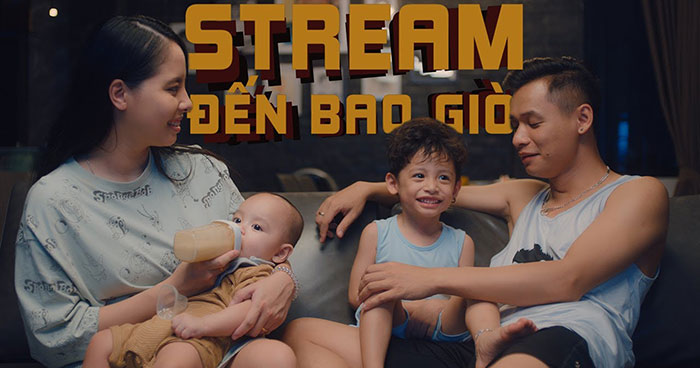

Song by Mixigaming

Hoh hoh hoh
Tối đến là vô làm tính ra thì hơi nhàn
Nhìn màn hình stream tới khi đêm tàn
Lân la vài câu chuyện con game cùng nhau luyện
Một mình ngồi đó nói cười
Đấy trên stream lúc nào tôi cũng cười cười nói nói như thế đấy
Nhưng mà ai biết bên trong như thế nào đâu các bạn
Cuộc sống mà nói ra thì bảo kể khổ chứ
Khô gà tôi bán toàn lỗ thôi
Quanh năm suốt tháng bạn bè đi du lịch còn tôi thì cứ ngồi lì một chỗ ấy
Mặt trời vừa tỉnh giấc (tỉnh giấc)
Mệt nhoài tưởng sắp ngất
Đặt mình vào bộ chăn gối
Làm một mạch đến tối
Có khi suốt bao nhiêu ngày
Quẩn quanh mãi trong nơi này (nơi này)
Dần dần rồi thì cũng thành quen
Đần đần vì ngủ ngày cày đêm
Cũng may vì không túng thiếu
Nhưng cũng chỉ có bấy nhiêu
Vậy mà hay cuộc đời nhiều chuyện lạ thay
Mang tới niềm vui mà người ta không thích
Đành chịu thôi cố giữ nụ cười ở môi
Làm việc mình thôi thế nhưng vẫn có
Vài ba người cứ hỏi thăm
Làm nghề đến mấy năm
Rằng nhiều lắm khó khăn
Hay là vui mỗi ngày
Tiền nong thì dễ kiếm không
Người ta nhòm ngó cũng đông
Ngoài bạn bè ra thì ai ở bên lúc buồn
Hỏi là làm cái nghề này đến bao giờ thì làm sao mà có thể trả lời được
Tại vì trước khi mình bắt đầu làm cái nghề này đến bây giờ mình mới biết nó sẽ thành công đâu
Ôi cái nghề làm dâu trăm họ (trăm họ)
Sức khỏe thì ngày càng đáng lo (đáng lo)
Không biết cố được mấy năm nữa
Ta cứ làm mà chẳng cần đắn đo (đắn đo)
Cuối tháng vợ đưa hoá đơn tiền điện tiền nước tiền sinh hoạt chung
Hôm sau lại tiền bỉm sữa tiền lãi ngân hàng tiền đồ gia dụng
Lúc mọi người ngủ thì ta thức
Đến ba giờ dạ dày đau nhức
Cũng còn may khi mà có anh em bên cạnh an ủi thôi thế cũng mừng và
Không quan tâm đến chuyện gần xa
Không sân si đến chuyện nhà người ta
Biết thân biết phận của mình thôi
Dòng đời trôi chẳng cầu mong điều gì xa hoa quá
Chuyện gần xa cuộc đời ta nào thể biết hết nhưng vẫn có
Vài ba người cứ hỏi thăm làm nghề đến mấy năm
Rằng nhiều lắm khó khăn hay là vui mỗi ngày
Tiền nong thì dễ kiếm không
Người ta nhòm ngó cũng đông
Ngoài bạn bè ra thì ai ở bên lúc buồn
Vài ba người cứ hỏi thăm làm nghề đến mấy năm
Rằng nhiều lắm khó khăn hay là vui mỗi ngày
Tiền nong thì dễ kiếm không
Người ta nhòm ngó cũng đông
Ngoài bạn bè ra thì ai ở bên lúc buồn
Làm đến năm bảy mươi tuổi thôi nhá